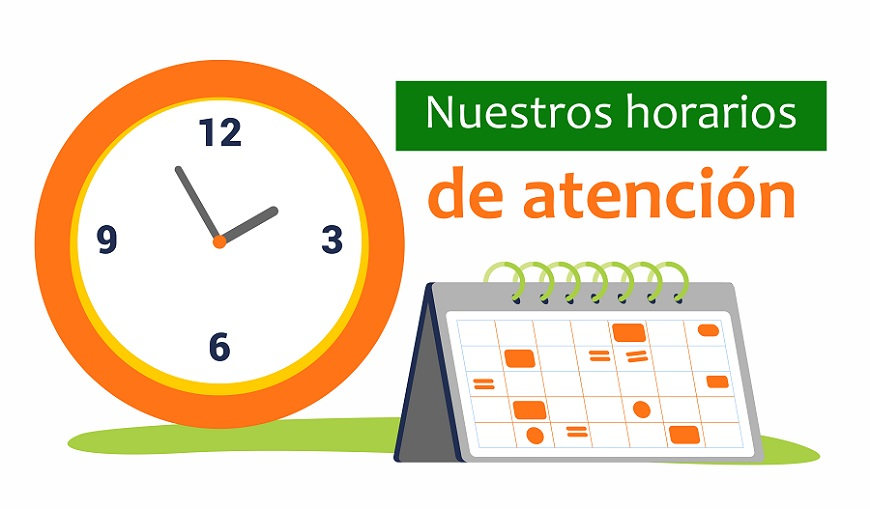

<app-no-internet *ngIf="!tieneInternet;else contenttota"></app-no-internet>

<ng-template #contenttota>
  <app-header atras="true" titulo="Horarios"></app-header>
  <ion-content>
    <ion-card>
      
      <ion-card-header>
        <ion-card-title>Horarios de Atención</ion-card-title>
        <ion-card-subtitle>Comedor ESPOCH</ion-card-subtitle>
      </ion-card-header>
    
      <ion-card-content>
        <p> De Lunes a Viernes </p>
        <ion-list>
          <ion-item>
            <ion-label> <strong> Desayunos: </strong>  7 am. - 10 am.</ion-label>
          </ion-item>
          <ion-item>
            <ion-label> <strong> Almuerzos: </strong>  12 pm. - 14 pm.</ion-label>
          </ion-item>
        </ion-list>
      </ion-card-content>
    </ion-card>
  </ion-content>
</ng-template>
